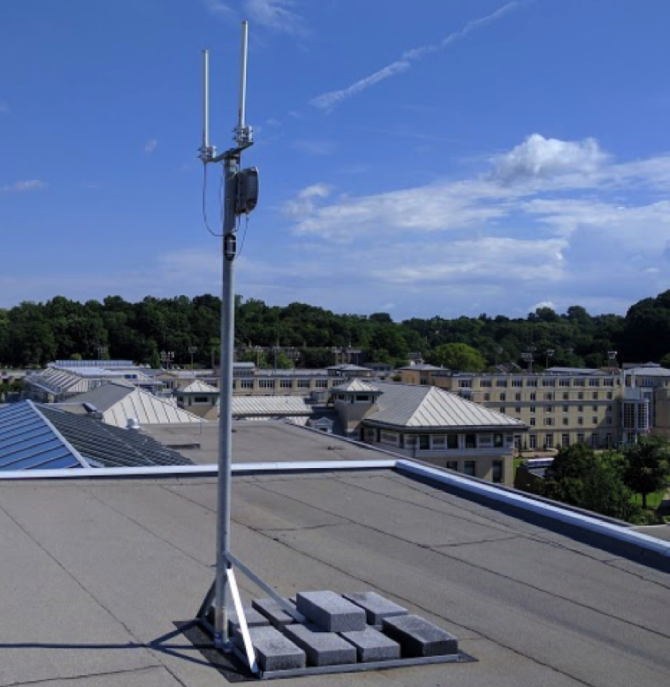

Project: Pushing the Limits of Low-Power Wide-Area Networks

Low-Power Wide-Area Networks (LP-WANs) aim to provide wireless connectivity at extremely low data rates (kbps) over distances of several miles to devices powered by a 10-year battery. Recent years have witnessed several efforts in this space such as LoRa, SIGFOX and NB-IoT. However, today's LP-WANs struggle to cope with the scale of future IoT deployments and the significant signal attenuation posed by urban environments. The WiTech lab group's research has developed new solutions for allowing LP-WANs to scale more efficiently, achieve even longer range in urban settings and save battery life.
Video Highlight
Publications
- A Roadmap for the Democratization of Space-Based Communications, Veronica Muriga, Swarun Kumar, Akshitha Sriraman and Assane Gueye, HotNets 2024 [WEBSITE]
- Adapting LoRa Ground Stations for Low-latency Imaging and Inference from LoRa-enabled CubeSats, Akshay Gadre, Zachary Machester, and Swarun Kumar, ACM ToSN 2024 [WEBSITE]
- SelfieStick: Towards Earth Imaging from a Low-Cost Ground Module Using LEO Satellites, Vaibhav Singh, Osman Yagan and Swarun Kumar, IPSN 2022 [PAPER] [WEBSITE]
- OwLL: Accurate LoRa Localization using the TV Whitespaces, Atul Bansal, Akshay Gadre, Vaibhav Singh, Anthony Rowe, Bob Iannucci and Swarun Kumar, IPSN 2021 [PAPER] [WEBSITE]
- Locating Everyday Objects using NFC Textiles, Jingxian Wang (Co-Primary), Junbo Zhang (Co-Primary), Ke Li, Chengfeng Pan, Carmel Majidi and Swarun Kumar, IPSN 2021 (Best Paper Award) [PAPER] [WEBSITE]
- Quick (and Dirty) Aggregate Queries on Low-Power WANs, Akshay Gadre, Fan Yi, Anthony Rowe, Bob Iannucci and Swarun Kumar, IPSN 2020 (Best Paper Award) [PAPER] [WEBSITE]
- Full Duplex Radios: Are we there yet?, Vaibhav Singh (Co-Primary), Akshay Gadre (Co-Primary) and Swarun Kumar, HotNets 2020 [PAPER] [WEBSITE]
- Cross Technology Distributed MIMO for Low Power IoT, Revathy Narayanan, Swarun Kumar and C. Siva Ram Murthy, IEEE Transactions on Mobile Computing 2020 [WEBSITE]
- Joltik: Enabling Energy-Efficient "Future-Proof" Analytics on Low-Power Wide-Area Networks, Mingran Yang, Junbo Zhang, Akshay Gadre, Zaoxing Liu, Swarun Kumar and Vyas Sekar, MobiCom 2020 [PAPER] [WEBSITE]
- A Cloud-Optimized Link Layer for Low-Power Wide-Area Networks, Artur Balanuta, Nuno Pereira, Swarun Kumar and Anthony Rowe, MobiSys 2020 [PAPER] [WEBSITE]
- Poster: Does Ambient RF Energy Suffice to Power Battery-free IoT?, Atul Bansal, Swarun Kumar and Bob Iannucci, MobiSys 2020 [WEBSITE]
- Quick (and Dirty) Aggregate Queries on Low-Power WANs, Akshay Gadre, Fan Yi, Anthony Rowe, Bob Iannucci and Swarun Kumar, IPSN 2020 (Best Paper Award) [PAPER] [WEBSITE]
- Frequency Configuration for Low-Power Wide-Area Networks in a Heartbeat, Akshay Gadre, Revathy Narayanan, Anh Luong, Swarun Kumar, Anthony Rowe and Bob Iannucci, NSDI 2020 [PAPER] [WEBSITE]
- Revisiting Software Defined Radios in the IoT Era , Revathy Narayanan, Swarun Kumar, HotNets 2018
- Poster: Maintaining UAV Stability using Low-Power WANs , Akshay Gadre, Revathy Narayanan, Swarun Kumar, MobiCom - Posters 2018
- Charm: Exploiting Geographical Diversity Through Coherent Combining in Low-Power Wide-Area Networks , Adwait Dongare, Revathy Narayanan, Akshay Gadre, Artur Balanuta, Anh Luong, Swarun Kumar, Bob Iannucci, Anthony Rowe, IPSN 2018 (Best Paper Award) [PAPER] [WEBSITE]
- Empowering Low-Power Wide Area Networks in Urban Settings , Rashad Eletreby, Diana Zhang, Swarun Kumar, and Osman Yagan, SIGCOMM 2017 [PAPER] [SLIDES] [WEBSITE]
Project Participants
- PI: Swarun Kumar
- Students: Akshay Gadre, Atul Bansal, Adwait Dongare and Artur Balanuta
- Collaborators: Prof. Anthony Rowe, Prof. Osman Yagan and Prof. Bob Iannucci